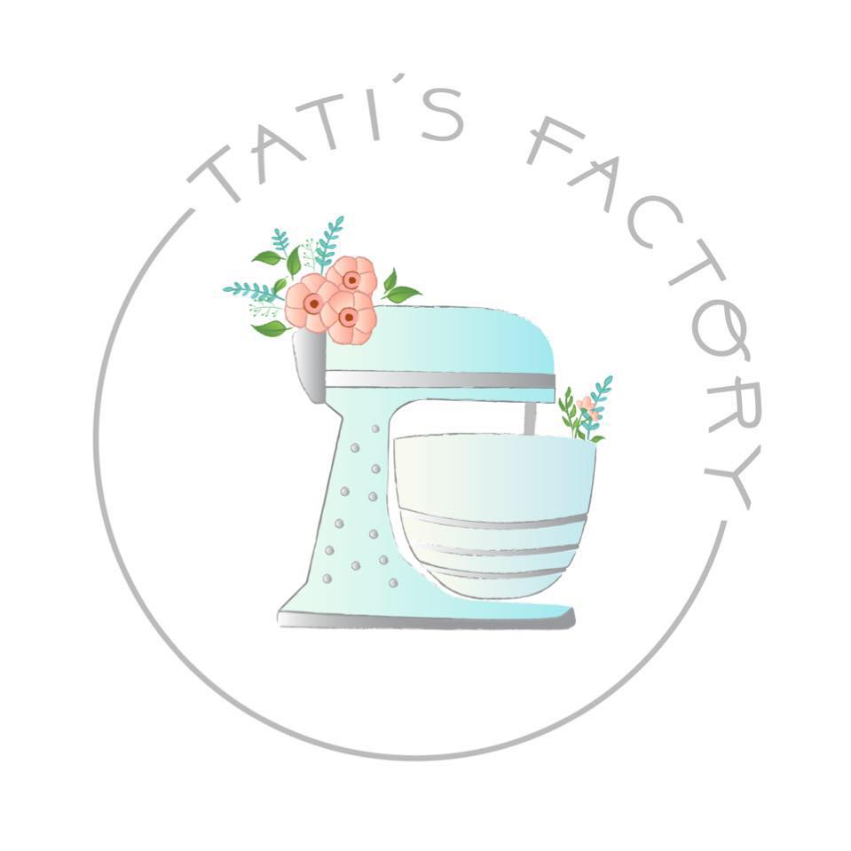

|  |
TATI'S FACTORY |
PARA COMPRAR
HAGA CLICK
AQUITati nació el 12 de abril de 1968 en la ciudad de Lima, Perú En 1987, junto a Lucas Rivas, abrió la pasteleria Tati’s Factory. En el año 2000 abrieron "La Fabrica", en el distrito de Miraflores. En 2005 publicó el libro de recetas Pasión por las tortas. El año siguiente empezó a conducir el programa de repostería Postres by Tati, por Plus TV. Tati es considerada una de las figuras femeninas más importantes de la cocina peruana.
Para mas informacion de Tati haga click
AQUICompré una torta tres leches de chocolate para el cumpleaños de mi novio y estuvo delicioso. El precio justo para el tamaño de la torta ¡Me encantó!
Si quieren probar una torta Tres Leches de Chocolate como ninguna, tiene que darse una vuelta por Tatis Factory, es increíble, tiene cobertura de chocolate de esa que es durita, con relleno de pudín de chocolate, y bizcochuelo húmedo de chocolate....ah!.
Cada vez que celebramos un cumpleaños en nuestra oficina siempre compramos ahi las tortas, son exquisitas y con ingredientes light, nutritivos y de temporada. Son muy cotizados ya que la calidad es bien alta para la gente exigente o para el extranjero que visita Miraflores.